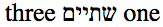
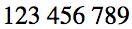

The main issue
The main issue is how a consumer of a string will know what base direction should be used for that string when it is eventually displayed to a user. A number of alternatives are considered below.
This is a draft for to promote discussion and to work through ideas, and may be updated at any time.
You can leave a comment using this link.
When a string contains text in a script that runs right-to-left (RTL), it must be possible to eventually display that string correctly when it reaches an end user. For that to happen, it is necessary to establish what 'base direction' needs to be applied to the string as a whole. We are encountering issue in this regard for a range of formats, including but not limited to JSON. The appropriate base direction cannot always be deduced by simply looking at the string, and if it were possible, the producer and consumer of the string need to use the same heuristics to interpret its direction.
This article is NOT about how to alter the direction of text inside a string.
If your specification or application provides a way of correctly displaying the following strings when they reach the point of display to the user, you will have solved the majority of the problems. For that to happen, there must be a way to tell the required base direction for each string.
All examples show characters from left to right in the order they are stored in memory. We use Hebrew text so as to avoid issues related to the display of cursive characters in Arabic. We will also use these tests as examples for the concepts on this page.
Tests 1-4 need to be displayed using an RTL base direction. Test 5 needs to be displayed as LTR text.
"בינלאומי!"
For presentation to a user, the characters above should be presented in the reverse order to what you see on this page. The Hebrew characters will be reversed by applying the Unicode Bidirectional Algorithm (UBA). However, the UBA cannot make the exclamation mark appear to the left of the Hebrew text, where it belongs, unless the base direction is set to RTL.
This is what the text of the string should look like if displayed correctly by a consumer: 
"bidi בינלאומי"
For presentation to a user, the text "bidi" must appear to the right of the Hebrew letters. The UBA cannot do this unless it knows that the overall base direction is RTL.
This is what the text of the string should look like if displayed correctly by a consumer: 
"<span>בינלאומי!</span>"
This test is intended for consuming applications that treat the markup in the string as actual markup. As for test #1, the exclamation mark must appear to the left of the Hebrew letters, regardless of the LTR directionality of the markup surrounding it.
This is what the text of the string should look like if displayed correctly by a consumer:
"<span dir='rtl'>one שתיים three</span>"
If the consuming application is expected to parse the markup as actual markup, the list in the element content above should be displayed to the user in the order "three שתיים one". This requires the UBA to know that the intended base direction of the string is RTL. The key point of this test is that the base direction information is carried in the markup.
This is what the text of the string should look like if displayed correctly by a consumer: 
"123 456 789"
When presented to a user, the order of the numbers must remain the same even when the directional context of the surrounding text is RTL. There are no strong directional characters in this string.
This is what the text of the string should look like if displayed correctly by a consumer: 
The main issue is how a consumer of a string will know what base direction should be used for that string when it is eventually displayed to a user. A number of alternatives are considered below.
Apart from the question of how a consumer will know what base direction to use for a string, the following are things that need to be considered for an end to end process that supports proper application of base direction to strings.
A string may become a string in a number of ways, including a content author typing strings into a plain text editor or text message, or a script scraping text from web pages, or acquisition of an existing set of strings from another application or repository, or, if you are lucky, a dedicated system with an interface that allows base direction to be specified during input. In this article, the producer of a string is the human or mechanism that creates a string for storage or transmission to a consumer of strings.
When a string is created, it's necessary to (a) detect the appropriate base direction to be associated with the string, and (b) take steps, where needed, to set the string up in a way that communicates the base direction.
For example, in the case of a string that is extracted from an HTML form, the base direction can be detected from the computed value of the form's field. Such a value could be inherited from an earlier element, such as the html element, or set using markup or styling on the input element itself. The user could also set the direction of the text by using keyboard shortcut keys to change the direction of the form field. The dirname attribute provides a way of automatically communicating that value with a form submission.
If the producer of the string is receiving the string from a location where it was stored by another producer, and where the base direction has already been established, the producer should understand that the base direction has already been set.
A consumer is an application or process that takes a string and places it into a context where it will be exposed to a user. It must ensure that the base direction of the string is correctly applied to the string in that context.
Applying the base direction may involve constructing additional markup or adding control codes or some such to indicate the base direction. It must also isolate embedded strings from the surrounding text to avoid spill-over effects of the bidi algorithm.
Any time a producer of a string takes special steps to add information about the base direction of that string it must do so with the expectation that the consumer of the string will understand how the producer did so. Even if no action is taken by the producer, the consumer must decide what rules to follow in order to decide on the appropriate base direction.
In some systems, the behaviour of the producer and the consumer of a string will both be specified. In others, such agreements may not be available.
First-strong detection looks for the first character with a strong Unicode directional property in a string, and sets the base direction to match it. Many developers assume that this provides a robust solution, but first-strong detection alone is not always adequate to communicate base direction.
Note that, if the producer is relying on the consumer using first-strong character detection to establish the contextual base direction of a string, the consumer needs to be aware that it should also use that approach. Although first-strong detection is outlined in the UBA, it is not the only possible higher level protocol mentioned for detecting string direction. For example, Twitter and Facebook currently use different default heuristics for guessing the base direction of text – neither use just simple first-strong detection, and one uses a completely different method.
The first-strong detection algorithm needs to skip characters at the start of the string that don't have a strong directional property.
It also needs to skip embedded runs of text that are directionally isolated from the text around it, if it is to follow the UBA. Isolation may be achieved by Unicode formatting characters, such as RLI, LRI and FSI, or by markup in the string if that markup is to be interpreted as actual markup by the consumer (eg. <span dir="rtl"> in HTML5).
The principle problem encountered with first-strong detection is that the first strong character is not always representative of the base direction that needs to be applied to that string, such as in test #2 above.
If a string contains markup that will be parsed by the consumer as markup, there are additional problems. Any such markup at the start of the string must also be skipped when searching for the first strong directional character. If, however, there is angle bracket content that is intended to be an example of markup, rather than actual markup, the markup must not be skipped. It isn't clear how a consumer of the string would know the difference between this case and the previous one.
If parseable markup in the string contains information about the intended direction of the string, that information should be used rather than relying on first-strong heuristics. This is problematic in a couple of ways: (a) it assumes that the consumer of the string understands the semantics of the markup, which may be ok if there is an agreement between all parties to use, say, HTML markup only, but would be problematic when dealing with random XML vocabularies, and (b) the consumer must be able to to recognise and handle a situation where only the initial part of the string has markup, ie. the markup applies to an inline span of text rather than the string as a whole.
If no strong directional character is found in the string, the direction should be assumed to be LTR.
The remaining sections look at ways that a string may be stored with additional information where text direction cannot be detected accurately by the first-strong method.
It is possible for a producer of a string to attach an RLM/LRM character to the beginning of those strings where the wrong base direction would otherwise be assumed when using a simple first-strong heuristic.
If the producer is a human, they could theoretically apply one of these characters when creating a string in order to signal the directionality, although they are very likely to not have a way of inputting RLM/LRM characters, especially on mobile devices.
However, humans often create text that will later become strings in environments where such action is unnecessary. For example, if a person types information into an HTML form and relies on the form's base direction or use of shortcut keys to make the string look correct in the form field, they would not need to add RLM/LRM to make the string 'look correct' for themselves, but outside of that context the string would look incorrect unless an appropriate strong character was added to it. Similarly, strings scraped from a web page that has dir=rtl set in the html element would not normally have or need an RLM/LRM character at the start of the string in HTML.
This approach is therefore only appropriate for general use if it is acceptable to change the value of the string.
Apart from changing the identity of the string, adding characters to it may have an effect on things such as string length or pointer positions, which may become problematic.
As a variant of the first-strong heuristic approach, the consumer would still need to also use first-strong heuristics to apply the correct directionality to the string.
If directional information is contained in markup that will be parsed as such by the consumer (eg. dir=rtl in HTML), the producer of the string should understand that markup in order to set or not set an RLM/LRM character as appropriate. If the producer always adds RLM/LRM to the start of such strings, the consumer should know that. If it relies instead on the markup being understood, the consumer needs to understand the markup.
The producer of a string should not automatically apply RLM or LRM to the start of the string, but should test whether it is needed. For example, if there's already an RLM there, no need to add another. If the context is correctly conveyed by first-strong heuristics, no need to add additional characters either. Note, however, that testing whether supplementary directional information of this kind is needed is only possible if the producer has access, and knows that it has access, to the original context of the string.
This approach inserts paired Unicode formatting characters at the start and end of a string to indicate the base direction.
If paired formatting characters are used, they should be isolating, ie. starting with RLI, LRI, FSI, and not with RLE or LRE.
However, It would not be enough to simply apply the UBA first-strong heuristics to such a string, because the Unicode bidi algorithm is unable to ascertain the base direction for a string that starts with RLI/LRI/FSI and ends with PDI. This is because the algorithm skips over isolated sequences and treats them as a neutral character. A consumer of the string would have to take special steps, in this case, to uncover the first-strong character.
This approach is also only appropriate if it is acceptable to change the value of the string. In addition to possible issues such as changed string length or pointer positions, this approach runs the risk of one of the paired characters getting lost, either through handling errors, or through text truncation, etc.
A producer and a consumer of a string would need to recognise and handle a situation where a string begins with a paired formatting character but doesn't end with it because the formatting characters only describe a part of the string.
Unicode specifies a limit to the number of embeddings that are effective, and embeddings could build up over time to exceed that limit.
Consuming applications would need to recognise and appropriately handle the isolating formatting characters. At the moment such support for RLI/LRI/FSI is not pervasive.
If it is possible to pass metadata with the string and the consumer knows how to retrieve the meaning of that metadata, this can provide a simple, effective and efficient method of communicating the intended base direction without affecting the actual content of the string.
Metadata not only removes the problem of whether or not, and how, to parse markup in a string to determine the direction, but even in the simplest strings, without markup, it avoids the need to inspect and run heuristics on the string to determine its base direction.
There needs to be metadata available for each individual string. Alternatively, metadata can be inherited, but some mechanism must be available to override the inherited direction for a particular string which differs in direction from the inherited value.
Metadata is probably most effective, however (especially for the original creator of the strings), if it is only passed with a string in those cases where first-strong detection is otherwise going to produce a wrong result. This would mean that consumers of strings should not only recognise the metadata, but should also expect to rely on first-strong heuristics for strings without metadata. It also means that producers of strings need to recognise situations where directional information is needed and set the metadata.